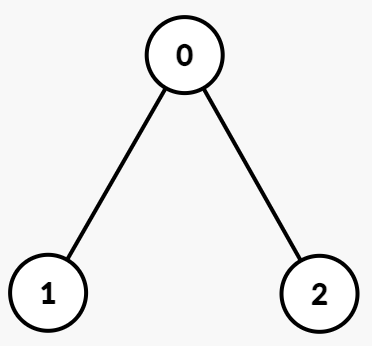
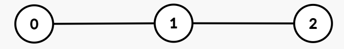

| Category | Difficulty | Likes | Dislikes |
|---|---|---|---|
| Algorithms | Hard | 26 | 11 |
You are given an undirected tree rooted at node 0 with n nodes numbered from 0 to n - 1. Each node i has an integer value vals[i], and its parent is given by par[i].
The path XOR sum from the root to a node u is defined as the bitwise XOR of all vals[i] for nodes i on the path from the root node to node u, inclusive.
You are given a 2D integer array queries, where queries[j] = [uj, kj]. For each query, find the kjth smallest distinct path XOR sum among all nodes in the subtree rooted at uj. If there are fewer than kj distinct path XOR sums in that subtree, the answer is -1.
Return an integer array where the jth element is the answer to the jth query.
In a rooted tree, the subtree of a node v includes v and all nodes whose path to the root passes through v, that is, v and its descendants.
Example 1:
Input: par = [-1,0,0], vals = [1,1,1], queries = [[0,1],[0,2],[0,3]]
Output: [0,1,-1]
Explanation:

Path XORs:
11 XOR 1 = 01 XOR 1 = 0Subtree of 0: Subtree rooted at node 0 includes nodes [0, 1, 2] with Path XORs = [1, 0, 0]. The distinct XORs are [0, 1].
Queries:
queries[0] = [0, 1]: The 1st smallest distinct path XOR in the subtree of node 0 is 0.queries[1] = [0, 2]: The 2nd smallest distinct path XOR in the subtree of node 0 is 1.queries[2] = [0, 3]: Since there are only two distinct path XORs in this subtree, the answer is -1.Output: [0, 1, -1]
Example 2:
Input: par = [-1,0,1], vals = [5,2,7], queries = [[0,1],[1,2],[1,3],[2,1]]
Output: [0,7,-1,0]
Explanation:

Path XORs:
55 XOR 2 = 75 XOR 2 XOR 7 = 0Subtrees and Distinct Path XORs:
[0, 1, 2] with Path XORs = [5, 7, 0]. The distinct XORs are [0, 5, 7].[1, 2] with Path XORs = [7, 0]. The distinct XORs are [0, 7].[2] with Path XOR = [0]. The distinct XORs are [0].Queries:
queries[0] = [0, 1]: The 1st smallest distinct path XOR in the subtree of node 0 is 0.queries[1] = [1, 2]: The 2nd smallest distinct path XOR in the subtree of node 1 is 7.queries[2] = [1, 3]: Since there are only two distinct path XORs, the answer is -1.queries[3] = [2, 1]: The 1st smallest distinct path XOR in the subtree of node 2 is 0.Output: [0, 7, -1, 0]
Constraints:
1 <= n == vals.length <= 5 * 1040 <= vals[i] <= 105par.length == npar[0] == -10 <= par[i] < n for i in [1, n - 1]1 <= queries.length <= 5 * 104queries[j] == [uj, kj]0 <= uj < n1 <= kj <= npar represents a valid tree.